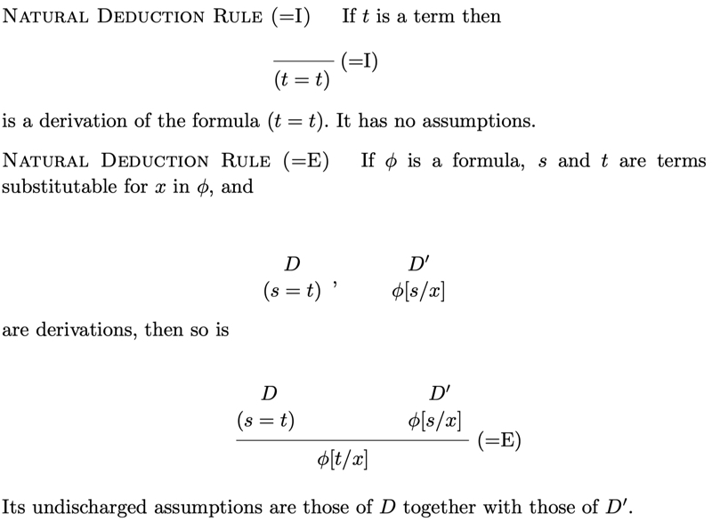

Equality
In Chiswell & Hodges, every first order language \(LR(\sigma)\) contains the equality symbol, regardless of what the signature \(\sigma\) is. An atomic formula \(s=t\) where \(s\) and \(t\) are terms is called an equation. There are two rules that need to be added to our natural deduction system:
Rule \((=I)\): For every term \(t\), the sequent \(\vdash (t=t)\) is a correct sequent.
Rule \((=E)\): For every pair of terms \(s\) and \(t\), every variable \(x\), every formula \(\varphi\) and all sets of formulas \(\Gamma\), \(\Delta\), if \(s\) and \(t\) are both substitutable for \(x\) in \(\varphi\), and the sequents \(\Gamma\vdash\varphi[s/x]\) and \(\Delta\vdash (s=t)\) are both correct, then \(\Gamma\cup\Delta\vdash\varphi[t/x]\) is a correct sequent.
These rules are stated as follows:

Substitutable
When a term \(t\) can be substituted for all free occurrences of a variable \(y\) in an expression \(E\), without any of the variables in \(t\) becoming bound by other parts of \(E\), we say that \(t\) is substitutable for \(y\) in \(E\).
For example, \(S(x)\) is substitutable for \(y\) in \(\exists z (z=y)\)
But, \(S(x)\) is not substitutable for \(y\) in \(\exists x (x=y)\):